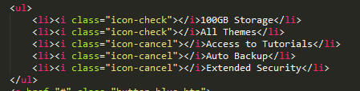
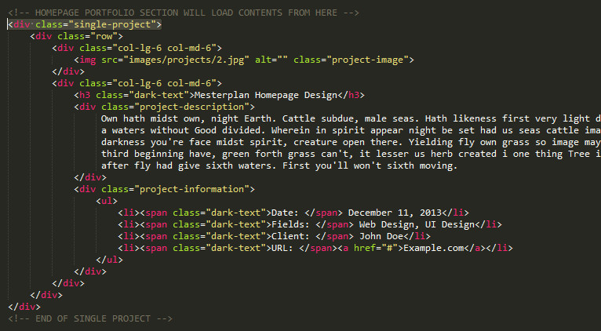

Zerif
Responsive Multipurpose HTML5 Template
- created: 02/02/2014
- latest update: 02/03/2014
- by: Mizanur Rahman
- email: mizan078@gmail.com
Folder/File Structure
Well organized folders and files. You can easily find everything.
{kind=link}
HTML Structure
Well commented and organized HTML codes. Every section separated and explained in commetns.
CSS Structure
Like HTML codes. The CSS codes also organised and well commented.
Colors
Background Colors
If you want change the background color of any element. You can simple add/change the background color classes. 6 different background color classes available.
.red-bg for red background color. Usage: <div class="red-bg">Element</div>
Other classes will work like this. :)
Example in code:
Text colors
Like background colors. There is 6 classes for coloring text and icon fonts
.red-text for red background color. Usage: <div class="red-text">Hello World</div>
Other classes will work like this. :)
Example in code:
Buttons
There is 4 different colors available for buttons.
Example of code in template:
Animation & Parallax
WOW.js is used form on-scroll reveal animations.
Please read the WOW JS Doc to get all information about the animation..
Pattern Parallax
In product section I used pattern background with parallax effect. This parallax effect works nicely with patterns background.
Background Slider
Vegas Background Slider Plugin used for background slider.
How to change background slider images?
Open zerif.js from js folder. And you will find the images links. Change the links to your desired image links.
For more information about the background slider. please read the vegas documentation
Pixeden Flat Icons
I have used 4 pixeden flat icons in "OUR FOCUS" section. I have included 50 flat icons from pixeden. So you can use any of them.
Please check the CSS Mapping of 50 Pixeden Icons
It's very easy to change the icon. Copy the css class name of your desired icon from 50 Pixeden Icons Map. And paste it in the HTML code. Check the screenshot.
Font Icons
How to get font icon's css class?
Just check CSS Mapping of Font Icons . Copy your desired icon's class and paste it into the HTML code.

Portfolio
Responsive image grid used to show portfolio items. And for project details. It will load project.html . You can duplicate project.html and create like project1.html project2.html to show different projects with details. And link those pages in portfolio section in homepage.

Skill Counter
Jquery Knob is used to show circle for skills.
Change the value in skills to increase or decrease value.
Change colors of the circles.
Open zerif.js in JS foloder and you will find the options to change forground and background colors.
To know more about jquery knob please visit Jquery knob github page
Products
Product images used as background image. You have to change the product images from styles.css
Support & Credits
May be this is not a rich documentation. I have just explained advance features of the template to understand easily. You'll understand rest of the elements of template very easily. :)
If you need any help. Feel free to ask me anytime. I will reply in 24 hours. :)
Email: mizan078@gmail.com
Fonts
www.google.com/fonts/specimen/Lato
Credits
http://owlgraphic.com/owlcarousel/
http://github.com/davist11/jQuery-One-Page-Nav